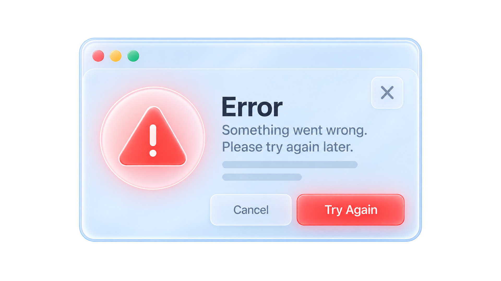
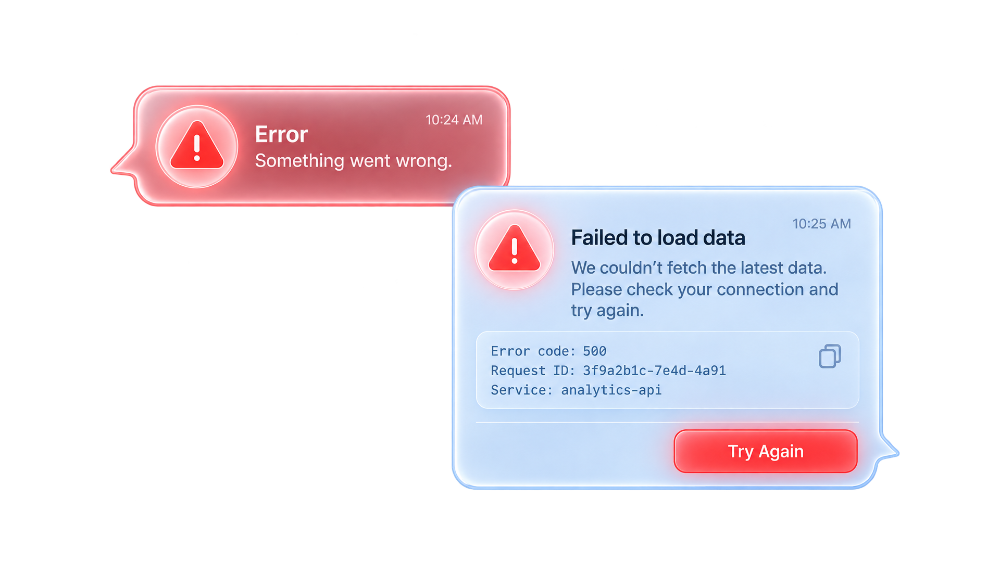
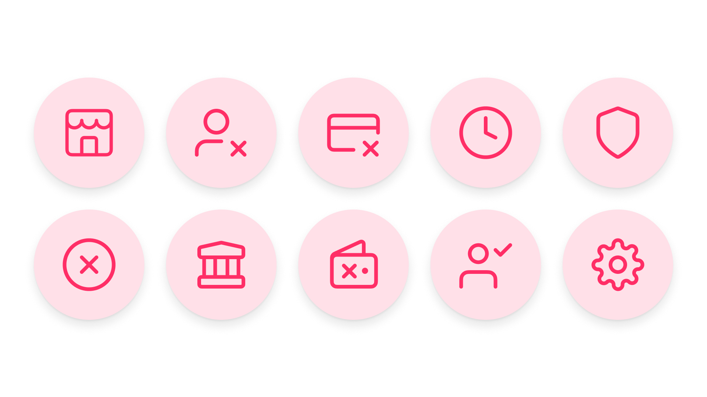
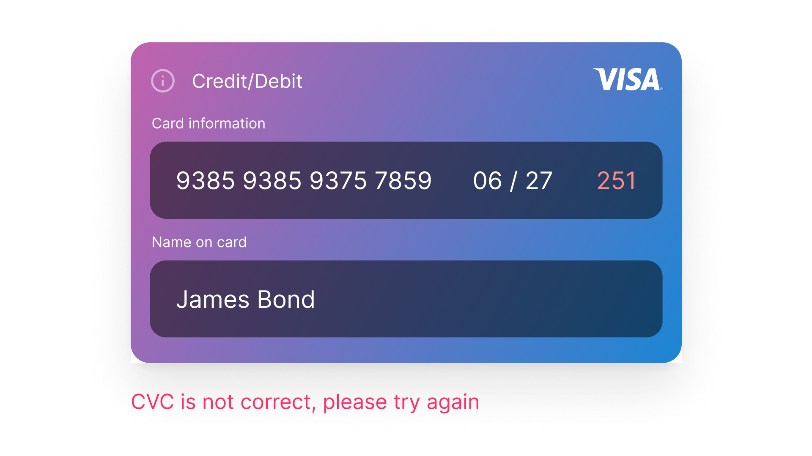
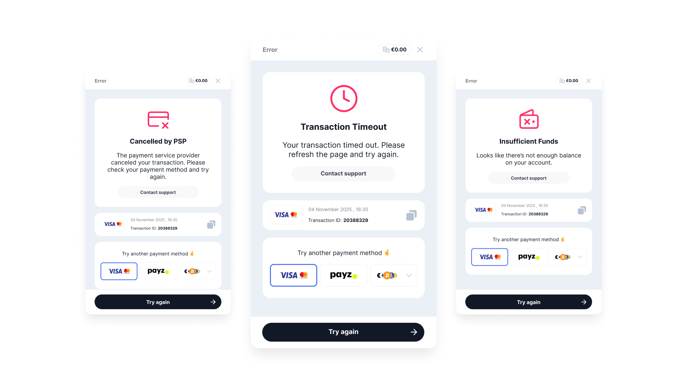
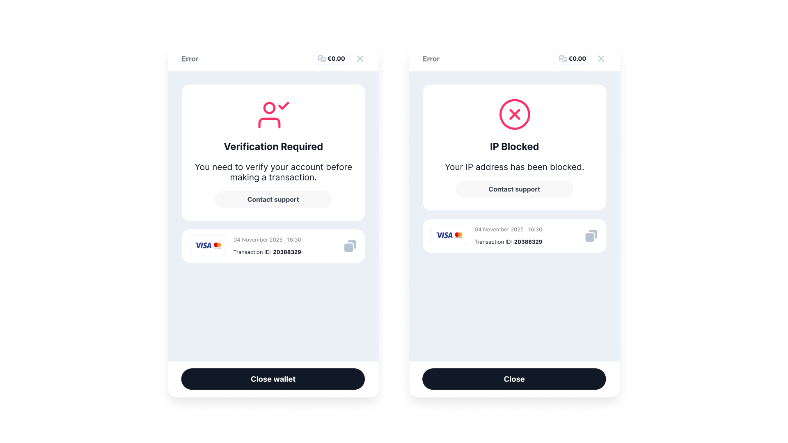

Context and problem
In payments, building user trust is a critical part of the journey. At first glance, trust elements like official government-approved badges, privacy assurance and licenses are standard to create the credibility with the user.
When you think of an error message, the first phrase that often comes to mind is "Something went wrong!". While that can be enough in some products, it's not sufficient for payments, where transactions can fail for many different reasons.

Generic error message
Without clear guidance, users may repeat the same action, hit the same error again, and become frustrated. Repeated failed attempts often lead to abandonment.
But trust isn't only about legality; it can come from transparency. Clear, detailed messages help users feel like you're on their side and want them to succeed.

Generic vs detailed error message
Understanding the errors
Transactions can fail for many reasons: declined by the bank, insufficient funds, invalid card details, verification failures, and more. When all of these are reduced to "Something went wrong", frustration is almost inevitable.
Payment-method errors usually come from a provider. At Fluid, I grouped them into broader categories using two main blocks: user errors and system errors.
Working in a highly regulated industry like iGaming also means accounting for fraudulent attempts and blacklisted users. These are the exception: if we detect suspicious behaviour, the less information we provide, the better.
Users and their state of mind
In most products, a transaction is the final step before a user receives a reward—whether that's shopping online, paying for a flight, or (in Fluid's case) starting a game.
This puts users in a mindset where they want to complete the transaction as quickly as possible, with minimal distractions. When errors occur (especially ones that feel unknown) conversion can drop dramatically.
And with payments, a user's first instinct is often to check whether the money actually left the account.
Design principles
- Visual aid: define icons that instantly communicate what went wrong. Example: Transaction expired → clock. Cancelled by user → a user icon.
- Clear error title: a short, straight-to-the-point title that summarises what happened.
- Contact support button: help users feel supported by adding a clear "Contact support" button.
- Alternative methods: depending on the error type—especially payment-method related—allow users to choose another method and jump straight back into the transaction flow.
- Take them where they left off: when users click "try again", don't force them through the entire flow. Instead, return them to the step right before the error, making the process feel less burdensome.
The design process
The first step was mapping the necessary content and organising its hierarchy. With the icon in red, the title in bold, and the body text in regular weight, the screen followed a clear, standard structure.
We also gave our B2B customers the option to customise error messages: editing copy, adapting translations, and selecting from a shared icon library for different error states.

Icon library for error messages
That direction set the tone: a minimalistic icon library and wording that stayed as clear and concise as possible while remaining friendly.
Some errors, like "Wrong CVC", didn't require a full-screen state and could be prevented. For example, the credit card input doesn't accept a 2-digit CVC and requires a minimum of 3. Instead of allowing a failed transaction, we prevent the deposit attempt until the required input is provided.

Card component: CVC Error state
The final designs
The final error screen designs include three main blocks: (1) the icon, error message, and contact support; (2) a summary of the attempted transaction (useful if the user contacts support); and (3) a payment-method selector, allowing users to choose an alternative method and complete the transaction. Separating information into distinct blocks makes it easier to scan and digest.

Final design: detailed error message screens
In some edge cases, like "KYC Verification Required" or "Account Restricted", the alternative method is intentionally not offered, since another deposit attempt would lead to the same outcome.

Final design: edge cases
Overall, B2B customers can customise icons per error message and start from a strong copy baseline—helping end users get as much transparency as possible about the state of their transaction.
Collaboration and constraints
Regulations dictated that once a user is flagged as "blacklisted", they shouldn't be told the exact reason they can't complete a transaction.
Another constraint was determining, for each error type, where to return the user in the flow so they could resume without unnecessary repetition.
Impact and measurement plan
This iteration proved successful: on average, 50% of users completed a deposit on their second attempt. It also significantly reduced support contacts, since users could see the information they needed directly on the error screen.
Next steps
Continue supporting error states, and capture deeper insights into error-screen behaviour by adding a dedicated section in the data visualisation tool.